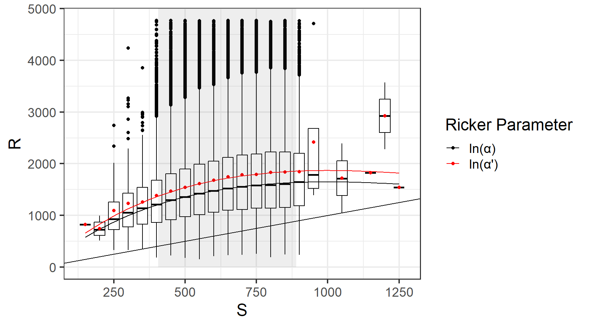
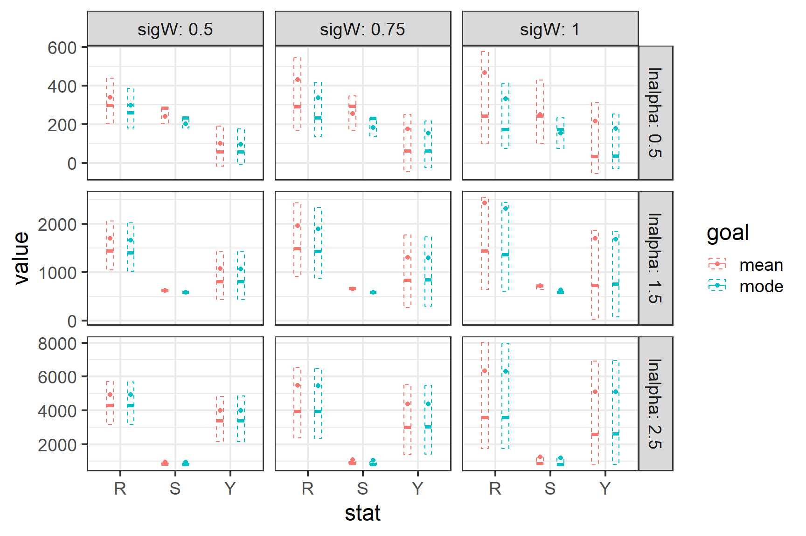

Which Ricker curve is best?
Hello all,
During our meeting last week it became apparent that my understanding of the \(log(\alpha)\) correction differed markedly from many others. I prepared this document to explain my understanding of this issue. In listening to everyone thoughts, and reading the paper Sara attached to the meeting, I noted three concerns from the group:
- \(S^{'}_{msy}\) (Smsy calculated using \(log(\alpha) + \sigma^2/2\)) is a poor estimate of \(S_{msy}\).
I was surprised by this as I was not aware that anyone thought \(S^{'}_{msy}\) was an estimate of \(S_{msy}\). I don’t want to pander to anyone but perhaps it’s helpful to state that \(S^{'}_{msy}\) exists to describe a Ricker curve that passes though the mean of the recruitment data. Because stock recruit equations generally assume lognormal process error the Ricker regression is conducted in log space. If we exponentiate the regression mean we get the mode of recruits in the natural space, which can be adjusted to represent the mean with the factor \(e^{\sigma^2/2}\). While it is convenient to incorporate this correction into \(log(\alpha^{'}) = log(\alpha) + \sigma^2/2\) this convenience is not meant to imply \(log(\alpha^{'})\) (or any of it’s derivatives) are less biased versions of the uncorrected parameter. In this light use of \(log(\alpha^{'})\) is really a decision about weather you want the Ricker curve to go through the mean or the mode of your data. The figure below demonstrated this choice by simulating many generations of stock recruit data (\(log(\alpha)=\) 1.5, \(\beta=\) 0.001, \(\sigma=\) 0.5), and binning the simulated recruitments into groups where each group corresponds to a range of 50 escaped fish. The box plots show the 25%, 50% and 75% quantiles and the red dot shows the mean for recruitment in each bin.
- Correcting for the mean is not appropriate when the posterior is simulated.
It has been pointed out that use of \(\sigma^2/2\) is unnecessary when using MCMC, since MCMC provides the entire posterior for estimated recruitment, from which both the median and the mean are readily available. This is correct, however the I’m unaware of anyone who uses \(\sigma^2/2\) to estimate the mean of annual recruitment with MCMC methods. Instead, \(\sigma^2/2\) is used to calculate \(log(\alpha^{'})\) and \(S^{'}_{msy}\) which describe a Ricker curve which go through the mean of the data.
- The department needs to be consistent in it’s usage of \(S_{msy}\) or \(S^{'}_{msy}\).
I certainly agree that our current system (which seems to be based on personal preference) could be refined. That said, I’m not convinced that it is in the department’s best interests to eliminate use of either \(S_{msy}\) or \(S^{'}_{msy}\) when describing spawn-recruit relationships. In the rest of statistics the analyst chooses a measure of central tendency depending on the analysis goals and the characteristics of the data. It is well known that the mean minimizes squared errors while a median minimizes absolute errors. It seems appealing to me to think about the mean/mode choice with respect to the Ricker curve in this way1 although it is not obvious (to me) that characteristics we know apply to the mean and mode of a random variable also apply to yields derived from management objectives derived from mean and mode centered Ricker curves. To evaluate situations where mean or mode centered Ricker curves may be preferable I conducted a simple management strategy evaluation.
The idea behind a management strategy evaluation is to simulate population dynamics using assumed stock-recruit equation and then ‘manage’ the population with a variety of operating models that describe different harvest strategies. The operating models I’ll explore maximize sustained yield by fishing to \(S_{MSY}\) or \(S_{MSY}^{'}\). Note that we should expect any difference we find to be modest as while \(ln(\alpha^{'})\) is considerably larger than \(ln(\alpha)\) at most combinations of \(ln(\alpha)\) and \(\sigma\), \(S_{MSY}^{'}\) is more similar to \(S_{MSY}\) and \(R_{MSY}^{'}\) (the point estimate for recruitment at \(S_{MSY}^{'}\)) is even more similar to \(R_{MSY}\) at the same parameter values.
For this example I picked a range of values for \(ln(\alpha)\) (0.5, 1.5, 2.5) and \(\sigma\) (0.5, 0.75, 1) which should span all of the values you would expect to see in a salmon population. For each combination I simulated 2 populations of 500 generations which were exposed to identical annual process error. Each population was harvested at a rate that would maximize sustained yield according the the mode or mean Ricker curve (S = \(S_{MSY}\) or \(S_{MSY}^{'}\)). Harvest rates were 0 if the simulated number of recruits was less than \(S_{MSY}\) or \(S_{MSY}^{'}\) and could not exceed 85%. The plot below shows summary statistics for recruitment, spawning abundance and yield. The dots and error bars show the mean for each parameter while the 25%, 50% and 75% quantiles are shown using a box plot. As expected, differences in yield are negligible for most combinations of \(ln(\alpha)\) and \(\sigma\) while recruitment and spawning escapement are generally larger when managing to \(S_{MSY}^{'}\).

In my eyes the plot above argues for managing to \(S_{MSY}^{'}\) because while the situation where we would experience improved yield appear to be negligible at worst we are able to attain the same yield with larger numbers of fish returning and being allowed to spawn. However, you may be able to make an economic argument for managing to \(S_{MSY}\) which revolves around fishery predictability. The plot below shows the probability that the fishery is overcapacity [P(U=85%)] thus forgoing available yield or closes [P(U=0%)] for each scenario. Not surprisingly the slightly larger objective associated with \(S_{MSY}^{'}\) leads to more closures but fewer situations where the fishery is overcapacity. Again the differences are small.

There is one obvious situation where an analyst may want to choose the Ricker mode to describe the stock recruit relationship, that being the case where the available data has an extreme outlier. I admit cherry picking this data from my simulation time series (\(ln(\alpha)\) = 1.5 and \(\sigma\) = 0.75) but I did not have to look to hard… I just picked the first 25 year chuck that had one very large recruitment. Below I show the data, the true Ricker relationship, the estimated Ricker mean and the estimated Ricker mode. While in this case we see that the large recruitment forces the estimated mean stock recruit relationship too high a naive analyst (who does not know the true SR relationship) might prefer to use the mode based on her belief that the large recruitment was associated with analogously large process error or simply distorts the relationship due to its size and the relatively sparse data available to counter it’s effect.